Giới thiệu CSS
1. Tổng quan CSS
Cascading Style Sheets, thường được viết tắt là CSS, là một ngôn ngữ định kiểu được sử dụng để định dạng – trình bày một tài liệu HTML hoặc XML (bao gồm các ngôn ngữ XML khác nhau như SVG hoặc XHTML). CSS mô tả quy cách các phần tử được cấu trúc phải được hiển thị trên màn hình, trên giấy, trong lời nói hoặc trên các phương tiện khác.
CSS là một trong những ngôn ngữ cốt lõi của web mở và có đặc tả W3C tiêu chuẩn hóa. Được phát triển theo cấp độ, CSS1 hiện đã lỗi thời, CSS2.1 là một đề xuất và CSS3, hiện được chia thành các mô-đun nhỏ hơn, đang tiến triển trên bản theo dõi chuẩn. Bản thảo đầu tiên của các mô-đun CSS4 đang được viết.
2. Cú pháp và cách tạo CSS
Quy tắc CSS gồm một bộ chọn và một khối khai báo.
bộ_chọn {
thuộc_tính: giá_trị;
[thuộc_tính_khác: giá_trị;]
}
Bộ chọn trỏ đến phần phần muốn tạo kiểu.
Khối khai báo chứa một hoặc nhiều khai báo được phân tách bằng dấu chấm phẩy.
Mỗi khai báo bao gồm một tên thuộc tính CSS và một giá trị, được phân tách bằng dấu hai chấm.
Nhiều khai báo CSS được phân tách bằng dấu chấm phẩy và các khối khai báo được bao quanh bởi dấu ngoặc nhọn.
Chúng ta có 3 cách tạo CSS: External(Bên ngoài), Internal(nội bộ), Inline(nội tuyến).
Với External CSS ta có thể thay đổi giao diện web bằng cách thay đổi một tệp, như vậy mỗi trang cần tham chiếu đến file CSS và được đặt trong phần tử link.
Ví dụ:
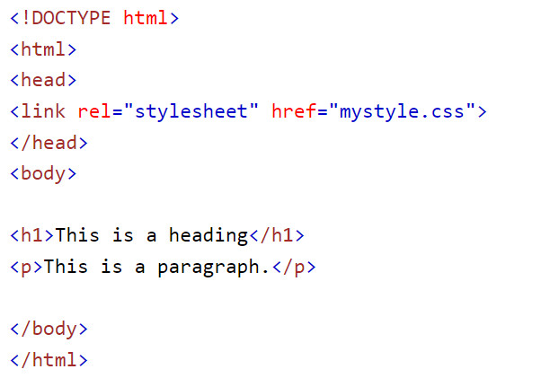"mystyle.css"
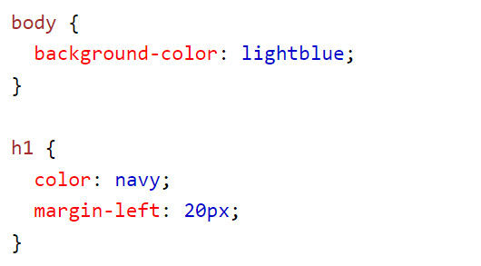Kiểu Internal được xác định trong phần tử style, bên trong phần tử head của trang HTML.
Ví dụ:
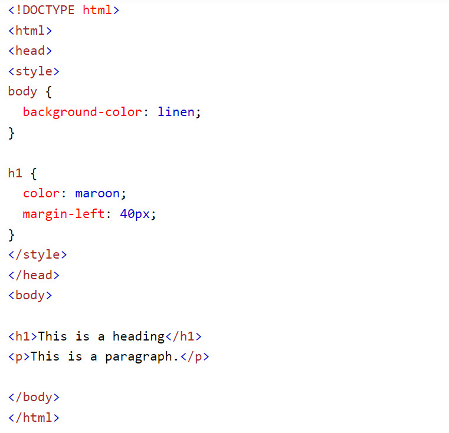Kiểu Inline được xác định trong thuộc tính "style" của phần tử có liên quan.
Ví dụ:
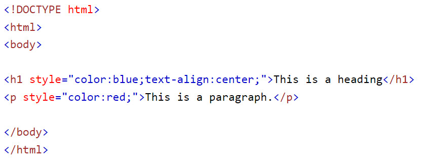3. Bộ chọn CSS
Bộ chọn CSS được sử dụng để tìm hoặc chọn các phần tử HTML mà bạn muốn tạo kiểu.
Chúng ta có thể chia bộ chọn thành năm loại:
- Bộ chọn đơn giản (chọn các phần tử dựa trên tên, id, lớp)
- Bộ chọn bộ kết hợp (chọn các phần tử dựa trên mối quan hệ cụ thể giữa chúng)
- Bộ chọn lớp giả (chọn phần tử dựa trên một trạng thái nhất định)
- Bộ chọn phần tử giả (chọn và tạo kiểu cho một phần của phần tử)
- Bộ chọn thuộc tính (chọn các phần tử dựa trên một thuộc tính hoặc giá trị thuộc tính)
Ví dụ:
Chọn các phần tử HTML dựa trên tên phần tử:
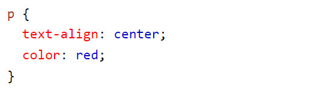Chọn các phần tử HTML dựa trên id của phần tử:
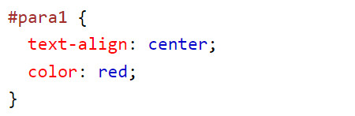Chọn các phần tử HTML dựa trên class của phần tử:
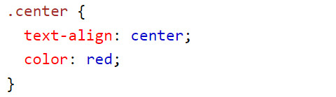Chọn tất cả phần tử HTML:
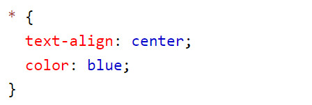Bộ chọn nhóm chọn các phần tử có cùng định nghĩa kiểu:
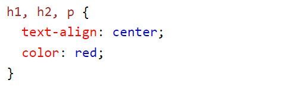4. Một số định dạng CSS
CSS Text
- Thuộc tính color được sử dụng để thiết lập màu sắc của văn bản.
Ví dụ:
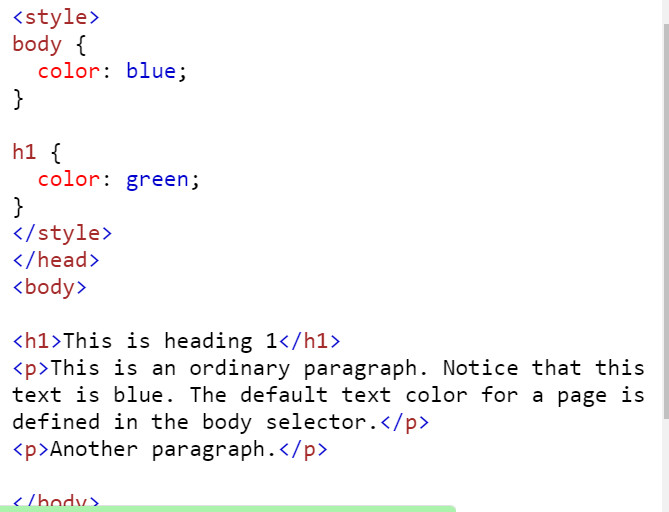 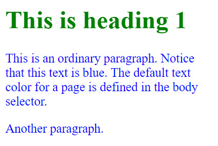- Thuộc tính background color sử dụng để thiết lập màu nền của văn bản.
Ví dụ:
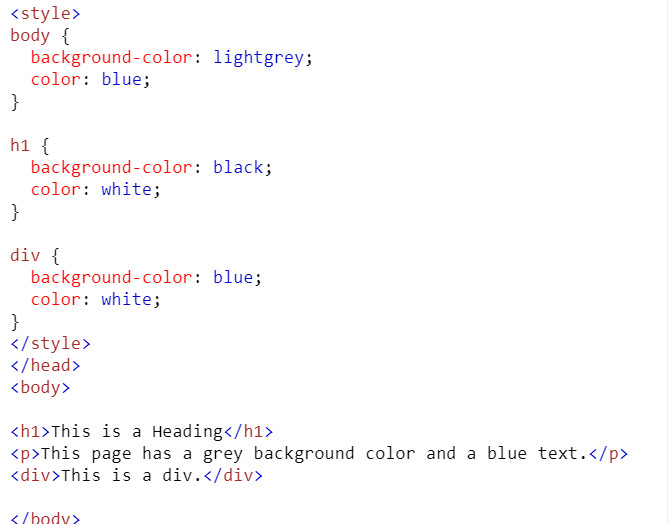 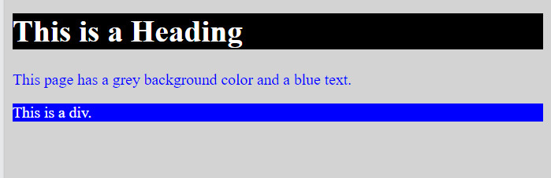- Thuộc tính text-align được sử dụng để căn chỉnh văn bản theo chiều ngang.
Văn bản có thể căn trái, phải, giữa tùy thuộc giá trị mà ta chỉ định.
Ví dụ:
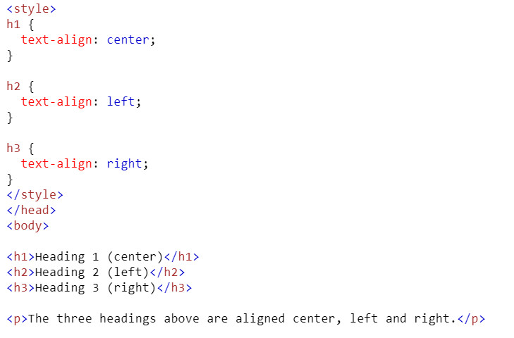 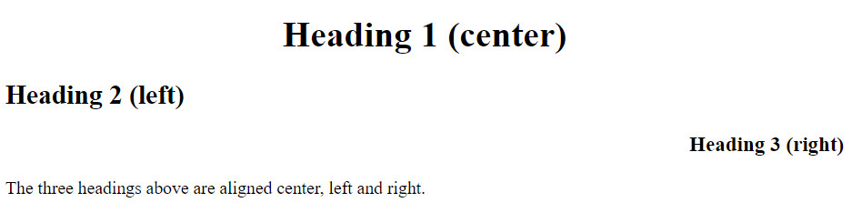CSS Margin
Lề được sử dụng để tạo không gian xung quanh các phần tử, bền ngoài đường viền.
Thuộc tính margin được sử dụng để tạo không gian xung quanh các phần tử, bên ngoài đường viền.
Các thuộc tính căn lề gồm: margin-top, margin-right, margin-bottom, margin-left
Đi kèm với thuộc tính là các giá trị: auto, length, %, inherit
Ví dụ:
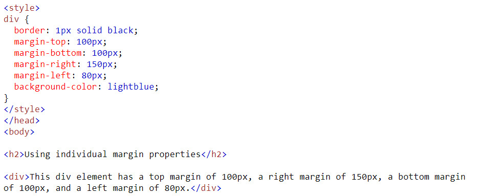 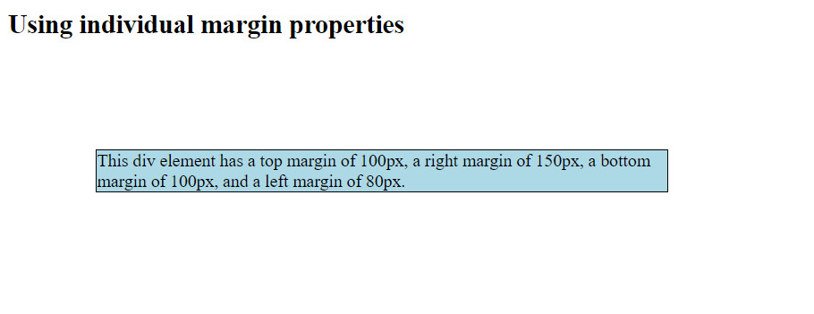CSS Pseudo-classes
Một lớp giả được sử dụng để xác định trạng thái đặc biệt của một phần tử.
Ví dụ, nó có thể được sử dụng để:
Tạo kiểu cho một phần tử khi người dùng di chuột qua nó
Định dạng kiểu cho link liên kết ở các trang thái truy cập khác nhau
Tạo kiểu cho một phần tử khi nó được lấy nét(focus).
Cú pháp tạo lớp giả:
selector:pseudo-class {
property: value;
}
Ví dụ:
- Tạo hiệu ứng di chuột dùng hover
Khi di chuột vào link nó sẽ đổi màu và font chữ
- Tạo tích xanh online dùng affter
5. Giới thiệu Bootstrap
Bootstrap là 1 framework HTML, CSS, và JavaScript cho phép người dùng dễ dàng thiết kế website theo 1 chuẩn nhất định, tạo các website thân thiện với các thiết bị cầm tay như mobile, ipad, tablet,...
Bootstrap bao gồm những cái cơ bản có sẵn như: typography, forms, buttons, tables, navigation, modals, image carousels và nhiều thứ khác. Trong bootstrap có thêm nhiều Component, Javascript hỗ trợ cho việc thiết kế reponsive của bạn dễ dàng, thuận tiện và nhanh chóng hơn.
Cách sử dụng bootstrap
Có hai cách tải Bootstrap về web: Tải trực tiếp từ trang cung cấp Bootstrap, Sử dụng bootstrap thông qua CDN Bootstrap.
- Tải về từ trang Bootstrap: chúng ta tải file bootstrap về và giải nén sau đó nhúng file css vào phần head như bên dưới:
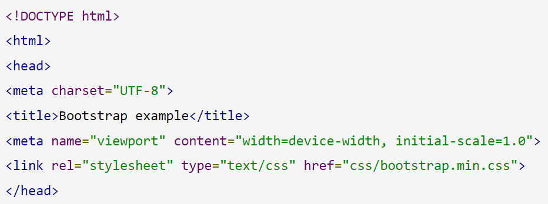- Sử dụng CDN(mạng phân phối nội dung): Chúng ta nhúng trực tiếp link website cung cấp Bootstrap như ở bên dưới:
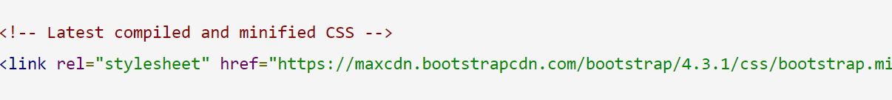